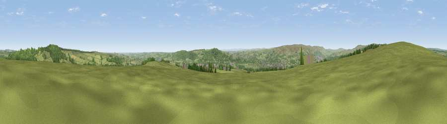

Viewpoint near Clifton
#16598 in England · top 21% of its area beats it · near CliftonThe view, rendered

A 360° render of this exact spot computed from the terrain model, tree cover and land cover — summer colours, afternoon light, calibrated against photographs of famous viewpoints. Real trees, hedges and buildings will differ in detail.
The panorama
Grey silhouette: terrain skyline in each direction (720 bearings, Earth curvature and refraction included). Dashed green: skyline with trees (+15 m) and buildings (+8 m) as obstacles. Blue strip: how far the ground is visible on each bearing.
Where the view opens
Wedge length = distance to the farthest visible ground on that bearing (vegetation-aware). Rings at 10, 25 and 50 km.
What fills the view
68% grassland · 25% woodland · 4% built-up · 2% cropland
Angular shares of the visible panorama (visual magnitude), not map area. Landscape diversity 0.36 (0–1 Shannon).
Key numbers
More beautiful places nearby
The staircase of upgrades: each row has a higher view potential than everything closer. Driving times are estimates from straight-line distance, calibrated against real road routing — check an actual route before setting out.
| Place | Direction | Drive | Score |
|---|---|---|---|
| Viewpoint near Clifton | NW · 0 km | ~2 min | 63.8 |
| Viewpoint near Timble | NNE · 2 km | ~6 min | 68.3 |
| Viewpoint near Otley | S · 5 km | ~11 min | 77.5 |
| Viewpoint near East Witton | N · 36 km | ~54 min | 77.8 |
| Hood Hill | NE · 44 km | ~65 min | 79.6 |
| Viewpoint near Kirby Knowle | NE · 46 km | ~67 min | 80.5 |
| Viewpoint near Thirlby | NE · 46 km | ~67 min | 81.5 |
| Beacon Hill | NNE · 57 km | ~79 min | 84.7 |
53.93968, -1.70787 · source: screening · position refined by local search. Computed location — check access rights before visiting.